Sprzedam VW Passat B7 z 2013 roku, benzyna 1.4 TSI, automat DSG.
Auto w ciągłej eksploatacji, normalnie użytkowane na co dzień.
Samochód sprowadzony z Niemiec – tam był drugim autem w rodzinie, używany głównie po mieście.W Polsce również jeżdżony głównie miejsko, bez katowania.
Stan techniczny: auto jeździ normalnie,nic się nie świeci, brak błędów,stan adekwatny do wieku i przebiegu.
Stan wizualny:wnętrze zadbane, brak przetarć, normalne ślady użytkowania
na zewnątrz lekkie rysy i otarcia, dokładnie to, co widać na zdjęciach.
Dodatkowo:przegląd techniczny ,ubezpieczenie OC do czerwca 2026
Wyposażenie m.in.: automatyczna skrzynia DSG,klimatyzacja automatyczna,tempomat,czujniki parkowania i kamera,nawigacja / multimedia,elektryczne szyby i lusterka
Cena: 36 490 zł
Cena do rozsądnej negocjacji na miejscu.
Auto do obejrzenia i jazdy próbnej.
Zapraszam osoby konkretnie zainteresowane,jeśli nie odbieram proszę o sms.
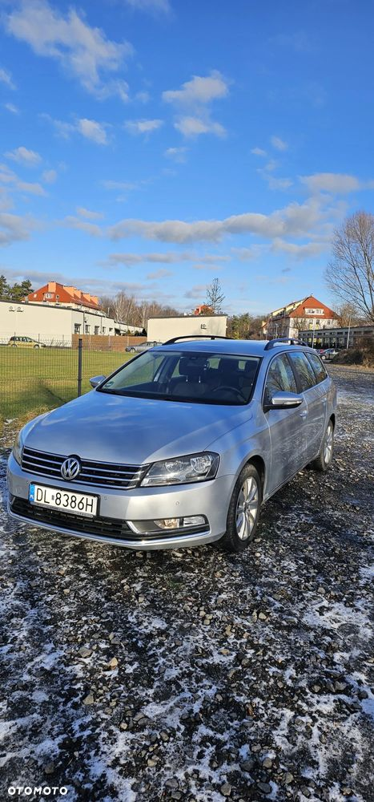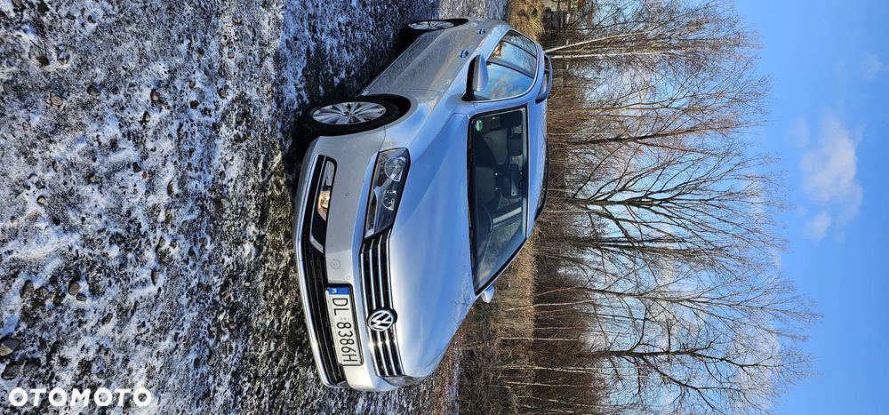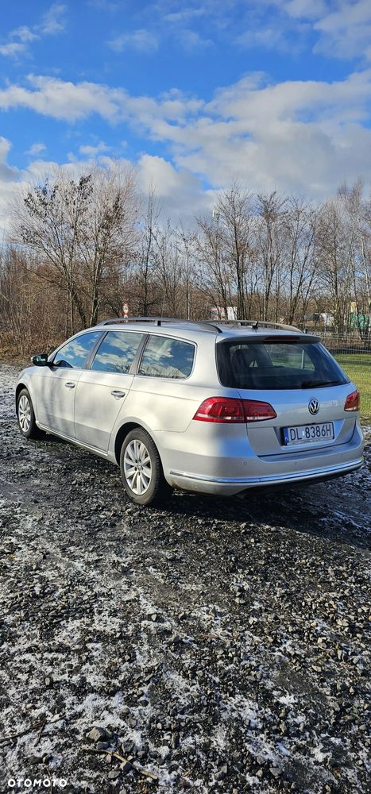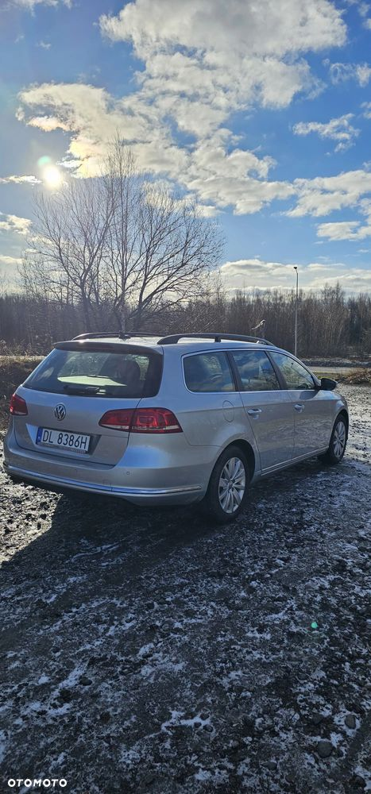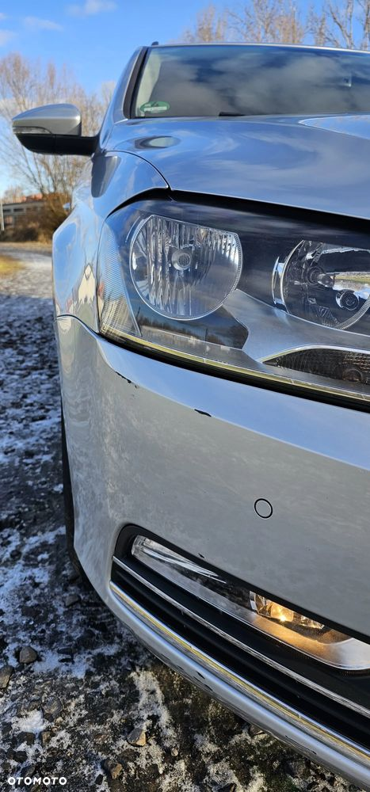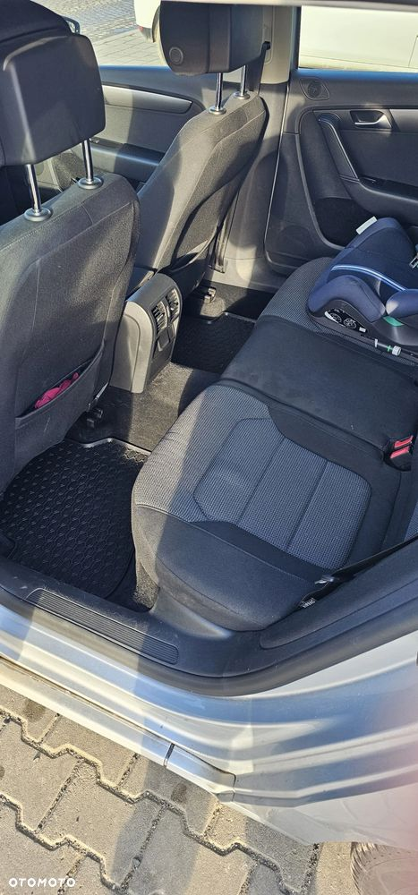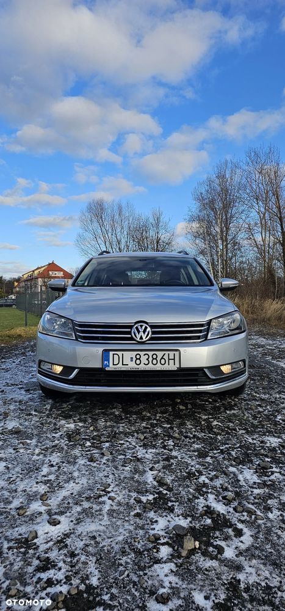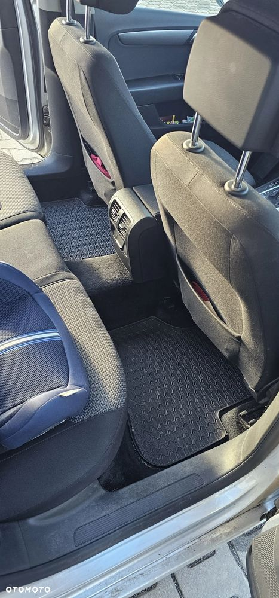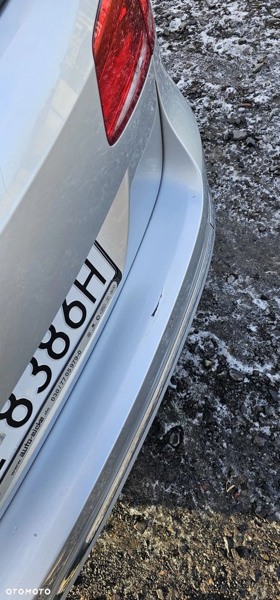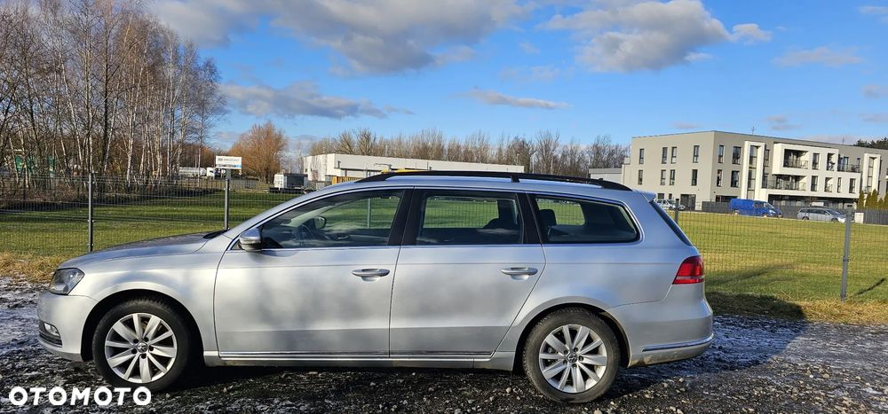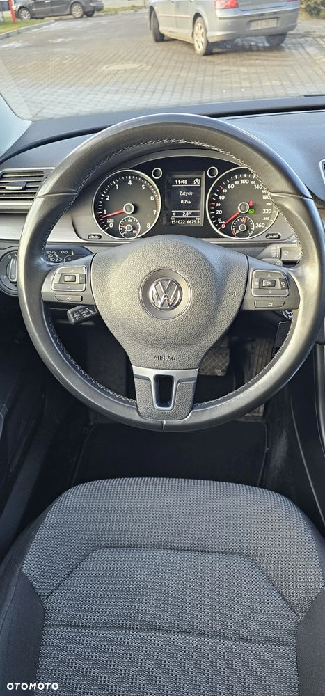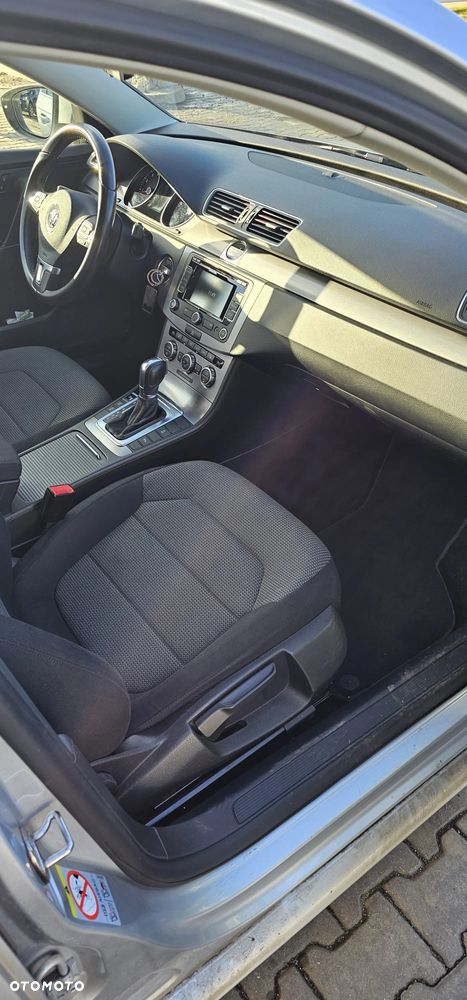